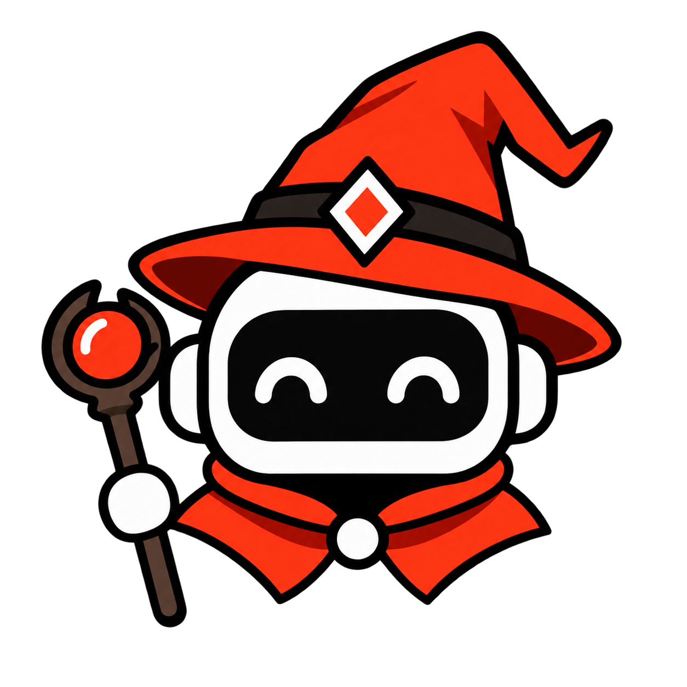

POKEWGGRIDPreencha e-mail/usuário e senha de cada painel. As senhas ficam criptografadas neste PC. "Logar equipe" entra automaticamente onde houver dados, e se a sessão cair o painel loga sozinho.
Rode userscripts (estilo Tampermonkey) dentro de cada painel do jogo. Cole os seus abaixo. Só adicione scripts em que você confia, eles têm acesso total à página do jogo.